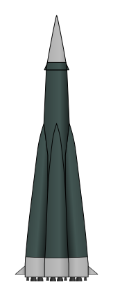

Пакет из пяти ракет
Читается подряд. Нажми на удар — откроется подробный разбор с источниками.
Сергей Королёв родился 12 января 1907 года в Житомире, в семье учителя словесности.Узнать подробнееСвернуть
По старому стилю — 30 декабря 1906 года. Окончил Одесскую строительную профессиональную школу (1924), учился в Киевском политехническом на авиационном отделении, в 1930 году окончил МВТУ имени Баумана.
Источник: Президентская библиотека имени Б. Н. Ельцина, «Родился советский учёный, конструктор ракетно-космических систем Сергей Павлович Королёв».
В 1933 году он пришёл в только что созданный Реактивный институт — заниматься ракетами.Узнать подробнееСвернуть
С 1930 года Королёв работал в Центральном аэродинамическом институте, в 1933-м перешёл в Реактивный научно-исследовательский институт и занимался крылатыми ракетами.
Источник: Президентская библиотека.
В конце 1930-х его арестовали по ложному обвинению и дали десять лет. Освободили досрочно, в июле 1944-го.Узнать подробнееСвернуть
Обвинение — «вредительство», по словам Президентской библиотеки, ложное. Досрочно освобождён 27 июля 1944 года. С 1946 года Королёв — главный конструктор баллистических ракет.
Источник: Президентская библиотека.
20 мая 1954 года правительство поручило его ОКБ-1 ракету, которая долетит до другого континента.Узнать подробнееСвернуть
Постановление вышло 20 мая 1954 года. Двигатели делало ОКБ-456 Валентина Глушко.
Источник: «История создания межконтинентальной баллистической ракеты Р-7», РИА Новости, 21.08.2012.
Королёв не поставил ступени друг на друга, а собрал их пакетом: четыре боковых блока вокруг центрального.Узнать подробнееСвернуть
Находка дняОбычная многоступенчатая ракета — башня: верхняя ступень зажигается, когда нижняя уже отработала и отпала, высоко в небе. У Р-7 четыре боковых блока — каждый 19 метров длиной и до 3 метров в диаметре — облегают центральный. Такую схему называют параллельным делением ступеней.
Главное её достоинство, по словам РИА Новости, — «возможность запуска всех двигателей на земле, а не в полёте». Если двигатель не запустился, это видно на старте, а не в небе.
Источник: РИА Новости, 2012.
У каждого бокового блока — четырёхкамерный двигатель Глушко. На старте ракета весила 283 тонны.Узнать подробнееСвернуть

Р-7 (8К71), рисунок WDGraham. Свободная лицензия с указанием автора. Длина ракеты — 31,4 метра, стартовая масса — 283 тонны, дальность — 8000 километров, масса головной части — 5,4 тонны.
Источник: РИА Новости, 2012.
15 мая 1957 года первый пуск с полигона Тюра-Там оборвался: в хвостовом отсеке начался пожар.Узнать подробнееСвернуть
Полёт сначала шёл нормально. Причина аварии — негерметичность топливной магистрали горючего. Полигон в Казахстане потом назовут Байконуром.
Источник: К. Редичкина, «Почему Р-7 смогли запустить только с четвёртого раза», «Парламентская газета», 21.08.2019.
11 июня ракета не ушла со стола, 12 июля на 33-й секунде потеряла устойчивость.Узнать подробнееСвернуть
11 июня пуск не состоялся из-за неисправности двигателей центрального блока. 12 июля причиной стало замыкание на корпус цепей управляющего сигнала интегрирующего прибора.
Источник: «Парламентская газета», 2019.
С четвёртой попытки, 21 августа 1957 года, головная часть дошла до полигона Кура на Камчатке.Узнать подробнееСвернуть
Головная часть попала в заданный квадрат. Но в плотных слоях атмосферы она разрушилась, и работа над ней продолжалась. Пуск признали успешным: ракета впервые прошла весь путь до района цели.
Выходит, Р-7 долетела до Камчатки только с четвёртой попытки, а через полтора месяца та же ракета вывела на орбиту первый спутник — 4 октября 1957 года.
Источники: «Парламентская газета», 2019; Президентская библиотека, «Состоялся запуск первой советской межконтинентальной баллистической ракеты Р-7».
27 августа газеты напечатали сообщение ТАСС: в СССР испытана «сверхдальняя многоступенчатая ракета».Узнать подробнееСвернуть
Американская межконтинентальная ракета «Атлас» успешно слетает только в ноябре 1958 года — больше чем через год.
Источники: Президентская библиотека (сообщение ТАСС); «Вокруг света», «Дубинки межконтинентального значения» («Атлас»).
4 октября 1957 года та же ракета вывела на орбиту первый в истории искусственный спутник Земли, 3 ноября — второй.Узнать подробнееСвернуть
Ракета надёжно работала на активном участке, и её решили использовать для спутников. О самом спутнике — страница 4 октября.
Источники: Президентская библиотека; РИА Новости, 2012.
На вооружение Р-7 приняли 20 января 1960 года. Её потомки до сих пор возят людей в космос: «Союз» — из той же семьи.Узнать подробнееСвернуть
12 апреля 1961 года ракета этой семьи подняла «Восток-1» с Юрием Гагариным. Сегодня «Союз-2» из той же линии продолжает летать. Королёв умер 14 января 1966 года.
Источники: Президентская библиотека (вооружение, Гагарин, даты Королёва); «Парламентская газета», 2019 («Союз-2» в эксплуатации).